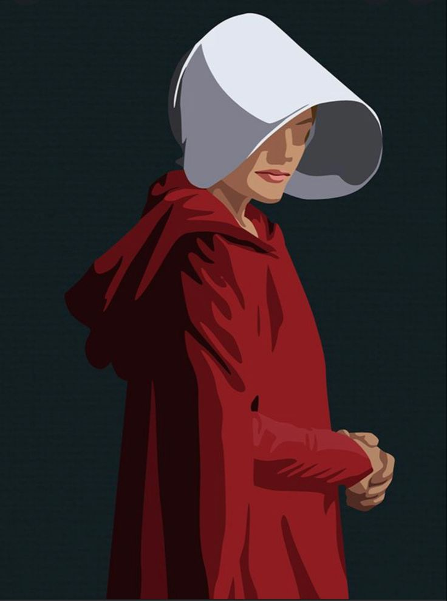

Detroit becomes human
Creator:Quantic Dream
Plot Summary: Detroit 2038. Technology has evolved to a point where human like androids are everywhere. They speak, move and behave like human beings, but they are only machines serving humans. Play three distinct androids and see a world at the brink of chaos – perhaps our future - through their eyes..
Relevance:...
Frankenstein
Author: Mary Shelley
Plot Summary: A scientist's quest to create life leads to tragedy and a profound exploration of human ambition, morality, and alienation.
Relevance:...

Neuromancer
Author: William Gibson
Plot Summary: A cyberpunk classic that delves into a dystopian world of artificial intelligence and cyberspace.
Relevance:...

The Handmaid's Tale
Author: Margaret Atwood
Plot Summary: In a totalitarian society, women are stripped of their rights, and the story follows Offred, a Handmaid forced into servitude.
Relevance:...

The Hunger Games
Author: Suzanne Collins
Plot Summary: In a dystopian future, Katniss Everdeen must navigate survival in a deadly televised competition.
Relevance:...

Brave New World
Author: Aldous Huxley
Plot Summary: A world of engineered conformity and pleasure challenges the boundaries of individuality and freedom.
Relevance:...

1984
Author: George Orwell
Plot Summary: A chilling depiction of a totalitarian regime where Big Brother watches everything and individuality is erased.
Relevance:...

Fahrenheit 451
Author: Ray Bradbury
Plot Summary: In a future where books are outlawed, a fireman begins to question the oppressive society he serves.
Relevance:...

Ready Player One
Author: Ernest Cline
Plot Summary: A young man competes in a virtual reality treasure hunt set in a dystopian future where the virtual world is a refuge.
Relevance:...